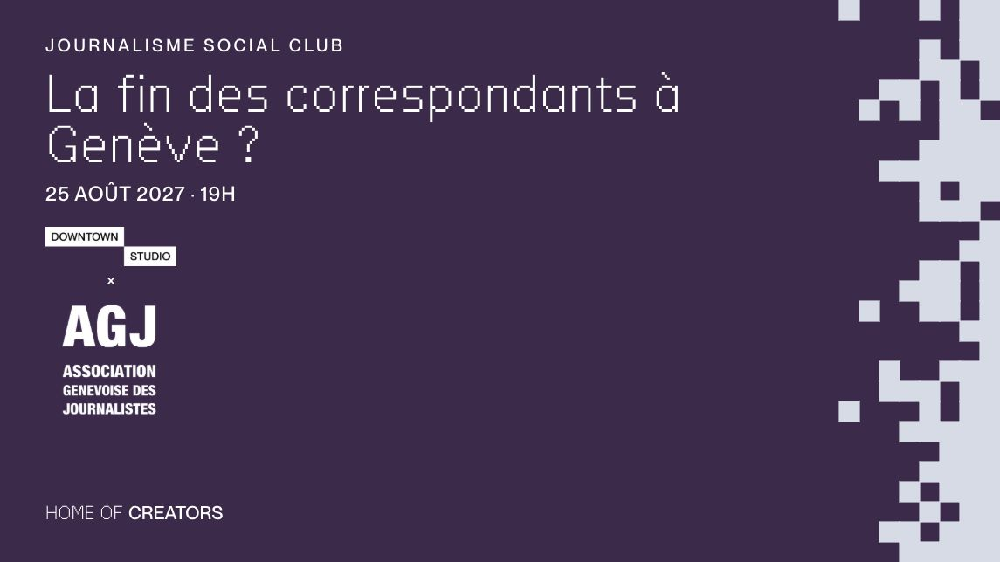

Rencontrer / Journalisme Social Club
Que deviennent les correspondants de la Genève internationale ?
[À VALIDER : date exacte du Journalisme Social Club d'août (le site actuel indique le mercredi 25 août 2027)]Journalisme Social Club

L'ONU traverse un plan d'austérité historique : des agences sont délocalisées et des centaines d'emplois supprimés. Que deviennent les correspondants de la ville, et y a-t-il encore des choses à raconter depuis la Genève internationale ?
Avec
- Stéphane Bussard, Le Temps
- Catherine Fiankan-Bokongo, France 24
- Kasmira Jefford, Geneva Solutions
- Nina Larson, AFP
- Modération : Aylin Elci